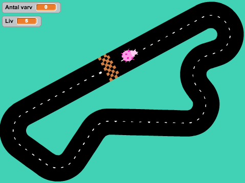
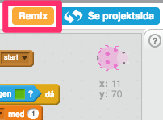
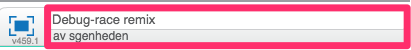
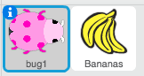

Debug Race
I denna uppgiften ska du hitta fel i koden för ett spel och åtgärda dem. Detta kallas att debugga. Du kommer att få öva dig på felsökning och repetera begrepp som du lärt dig tidigare i Kodstugan.

1 – Remixa ett projekt
Vi börjar med att remixa ett projekt som redan finns på Scratch.
Öppna din webbläsare och gå till:
https://scratch.mit.edu/projects/203394778/
Klicka på knappen "Se inuti" så att du kan se koden

Klicka sedan på knappen "Remix" så får du en egen version av spelet

När du har remixat spelet så ser du att namnet har förändrats.
Döp om till något roligare

I projektet har du nu en massa kod och två sprajter: 
En skalbagge som är din spelare
Bananer som är mat till skalbaggen
Testa spelet! Tryck på den gröna flaggan. Vad händer? Inte så mycket förrutom att skalbaggen rusar utanför planen - det är för att spelet är fullt med buggar.
Det finns 11 buggar i spelet – klarar du av att hitta dem? Kan du få spelet att fungera?
2 – Spelregler
Det är nu din uppgift att debugga koden. Du ska hitta de 11 felen och fixa dem. Till din hjälp får du här detaljerade spelregler. De förklarar för dig hur det är tänkt att spelet ska fungera.
Ditt mål är att styra skalbaggen runt banan till mållinjen.
Du styr skalbaggen med vänster och höger piltangent
Om du rör gräset så förlorar du 1 liv och får börja om från början av banan
Bananer kommer att dyka upp över hela banan och om du äter en så får du 1 extra liv
När du kommer i mål så börjar du om direkt från startpositionen
Du vinner när du har klarat av 10 varv.
Kan du få spelet att fungera precis så som reglerna säger? Utforska koden och om det blir svårt så gå till nästa steg och få lite tips.
3 – Tips
Om du har problem med att hitta buggarna kommer här några ledtrådar och tips.
Läs koden! Gå igenom varje block för både skalbaggen och bananerna och försök att förstå vad koden gör.
Tänk på att det ska fungera som ett recept, allt måste hända i rätt ordning
Repetera de begrepp du har lärt dig i kodstugan:
Vad är en loop? Vad finns det för typer av loopar?
Vad är ett villkor och hur funkar det?
Vad är en variabel?
Vad är ett slumptal och hur används dem?
Vad är ett meddelande?
Börja med det enklaste felet – varför åker skalbaggen iväg?
Spela spelet länge, det kanske är någon bugg som inte visar sig förrän senare i spelet eller när du spelat mer än en gång
Fråga och diskutera med en kompis
Skriv ner ändringarna du gjort i koden på ett papper